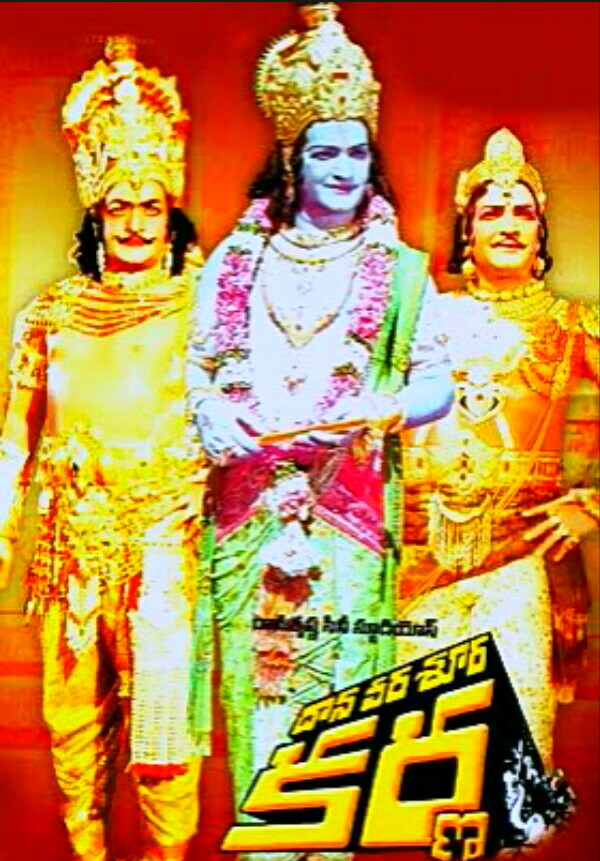

The following below are the Interesting facts about Myself.
I Like to watch Rohit Sharma Batting in Cricket.
I love to do Swimming.
I Support Formers & Indian Army
Daana Veera Soora Karna is a 1977 Indian Telugu-language Hindu mythological film co-written, produced and directed by N. T. Rama Rao under his banner, Ramakrishna Cine Studios. Based on the life of Karna from the Mahabharata, it stars Rama Rao in three roles: the title character, Duryodhana, and Krishna
